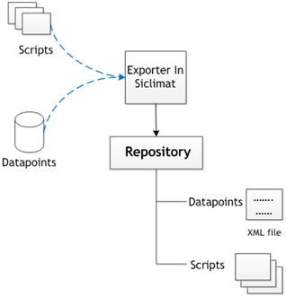
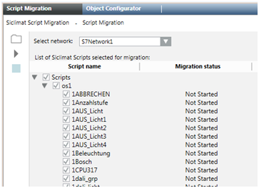
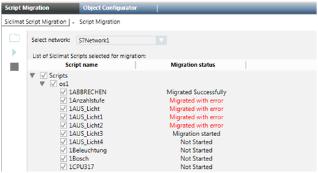
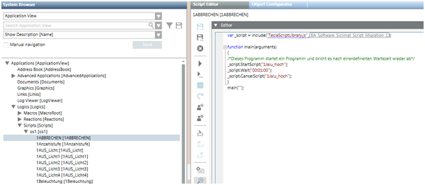

TECLA Script
Scenario
You want to migrate TECLA scripts.
The process of migrating the TECLA Scripts to JavaScript™ broadly involves three activities:
- Exporting the TECLA Script from SICLIMAT X OS storage
- Importing the TECLA Script in Desigo CC
- (Optional) Modifying and extending the migrated scripts
For general information on TECLA scripts, see SICLIMAT X TECLA Scripts.
Export Repository from SICLIMAT X OS
The process of exporting engineering data from SICLIMAT X OS is a common step during the migration of SICLIMAT X OS to Desigo CC. A routine called the Repository Extraction Tool in SICLIMAT X OS extracts all required information to a structure of folder and files. You can find more information about this tool under SICLIMAT X Export. For the migration of TECLA scripts, there are two essential parts – the TECLA script documents and the data point information in an XML file.

Import Scripts into the System
- The relevant data points of Siclimat are imported. For more information, see Importing the SICLIMAT X Project Data Files).
- System Manager is in Engineering mode.
- An S7 network exists.
- In System Browser, select Management View.
- Select Project > System Settings > Conversion Tools > Siclimat Script Migration.
- Select the Script Migration tab.
- From the Select network drop-down list, select S7Network.
- Click Browse .
- In the Repository Folder Selector dialog box, select the folder.
- The scripts are listed.
- Select the check boxes of the scripts to migrate.

- Click Run
 .
. - The execution status is updated.

- The Import summary dialog displays.
- Click OK.
- The data point objects representing the scripts and their content are available in System Browser.
